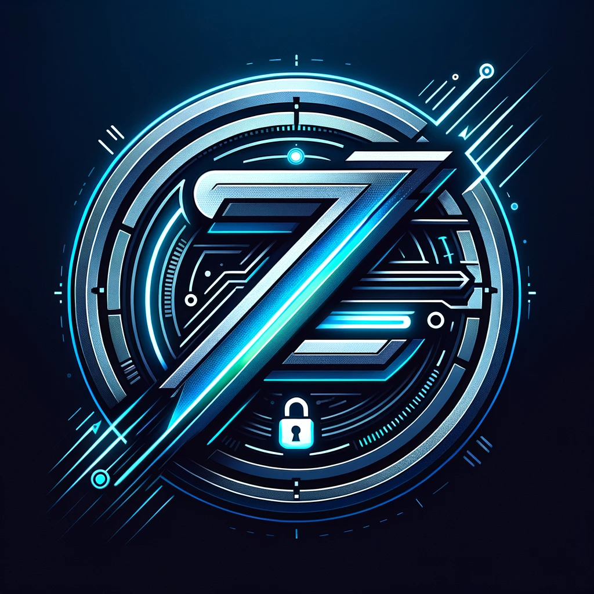

ZWP Authentication
ZWP (Zero Wait Password) is a standardized authentication system
designed to eliminate waiting and complexity from the login and sign up
process. It integrates a quantum resistant distributed passkey identity
into password managers, devices, and services providing a secure,
universal, and user-friendly solution for digital authentication.
How It Works
ZWP simplifies authentication across different platforms and devices
using a "Sign Up with ZWP" button. Here's the process:
-
Users select their preferred authentication method, including
popular password managers, upon their first interaction.
-
ZWP securely authenticates users using tokens or passkeys stored
within their chosen password manager, ensuring an instant login
experience.
-
Authentication tokens are accessible across devices, guaranteeing a
seamless and immediate login from anywhere.
Benefits
ZWP offers unparalleled benefits, including:
-
Instant Access: Eliminates waiting from the
authentication process, providing immediate access to services.
-
Universal Compatibility: A single sign-on method
works across countless services and platforms.
-
Enhanced Security: Improves security with
end-to-end encryption and secure token management, making your
digital identity safer than ever.
Integration
To integrate ZWP into your service, refer to the documentation
available at ZWP Developer's Guide.
<!-- ZWP Integration Code Snippet -->
<script src="path-to-0w8pw-integration.js"></script>